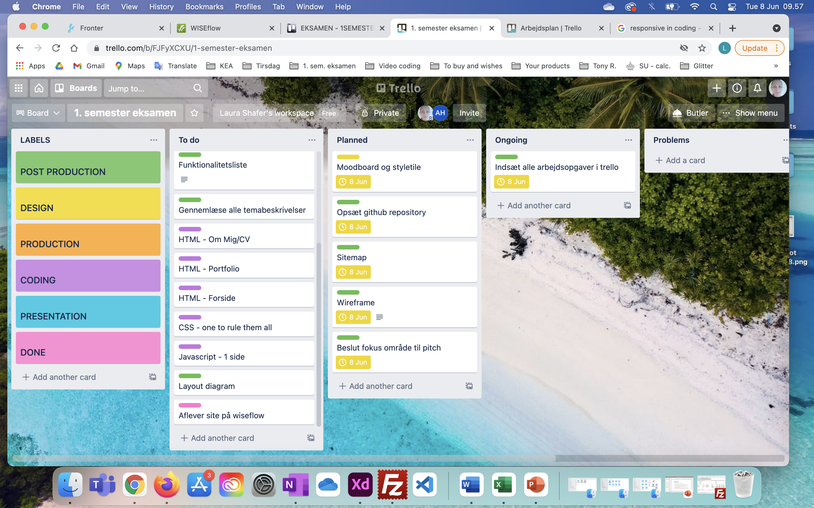

Tema 6 - Eksamen/portfolio
Tema beskrivelse
Eksamen på 1. semester består af sin egen individuelle portfolio website, samt en individuel mundtlig præsentation, efterfulgt af eksaminationen i portfolio websitet og ens egen præsentationen. Formålet er en formel vurdering af niveauet, man har tilegnet sig ved læringsmålene for 1. semester. Til eksamen skal man demonstrere viden, færdigheder og kompetencer, som er beskrevet i læringsmålene for 1. semester fra studieordningen (s. 6 - 8). Samtidig skal man kunne reflektere over, hvad man har lært på første semester.”
Projekt beskrivelse
Vi skal opsætte egen hjemmeside, med portfolio over vores tema’er og refleksioner, samt en side som beskriver os selv som individ.

Refleksioner af tema og projekt
Jeg syntes det er en fantastisk måde at opsamle alt viden, dokumentation og læring fra hele semestret. Det opfylder flere formål og er enormt givende for os selv fremadrettet at have denne oversigt i form at egen opsatte hjemmeside til at kunne finde nyttig information fra 1. semester. Udover at vi får det hele genopfrisket endnu engang. For mig har denne sidste opsummerende del, været den som bandt det hele sammen og gav mig det bedste overblik over min læring.